The internet is home of some of the absolute greatest1 things that humanity has to offer.
- The index to all knowledge.
- The worlds biggest and best encyclopedia.
- The most advanced calculator ever conceived of.
- An unending font of entertainment and education.
- The most dynamic organization tool ever made.
Amongඞthose ranks, I believe /r/Place deserves to go down as one of humanity’s best artistic achievements.
What is r/Place?
Reddit, for those of you who aren’t familiar with it, is a social media network that likes to call itself ‘the front page of the internet’. Unlike, say, Twitter or Facebook, in Reddit you don’t follow individual people, instead you follow topics which are are broken out into ‘subreddits’. Links are posted by the users in each subreddit and upvoted or downvoted depending on how much other users valued the content.
On April Fool’s day, 2017, the subreddit /r/Place was created. Unlike other subreddits, r/Place housed not only a never ending list of posts, but also a web application/distributed social art experiment.
How it Worked
There was a canvas. Any logged-in user could choose to place a colored square (aka ‘tile’) somewhere on that canvas. After placing your tile, a cooldown timer counted down (typically 5 minutes) until you could place another tile. In theory, you could build your own little piece of art or write your name pixel-by-pixel slowly over time. But that’s not what happened. No tiles were safe. The canvas was a 1000 by 1000 grid. All one million places were filled within a couple hours. When you tried to build something by yourself, it was doomed to be covered over by a group of users who choose to work together to do something else.
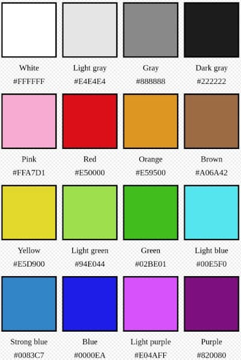
Fun fact that doesn’t fit anywhere else in this post: r/Place was created by a guy named “Josh Wardle”… who also created “Wordle”.
2017
In 2017 I tried to make something myself, like I’m sure 90% of people who participated did. After 2 or 3 very quickly squashed attempts, I banded up with the users of /r/SHIELD to work together on a chunk of canvas that we dedicated to the then-ongoing “Agents of Hydra” subplot2 of Season 4 of the show “Agents of SHIELD”. We held our ground amongstඞthe furious fighting and our little contribution, imperfect as it was, remains a part of internet history.
The Final 2017 Image
This is what Reddit made, through a great and beautiful chaos, between 4/1/2017 and 4/4/2017:
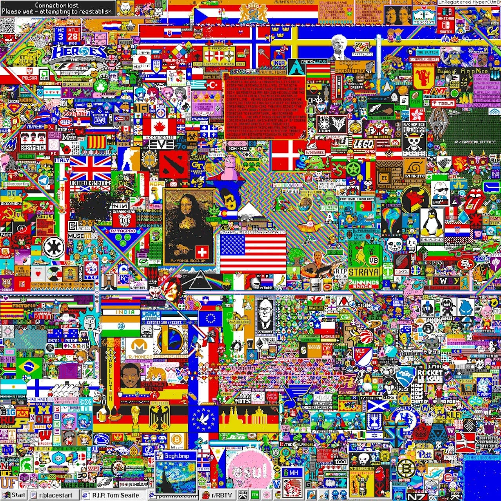
Here was the little chunk I helped with:
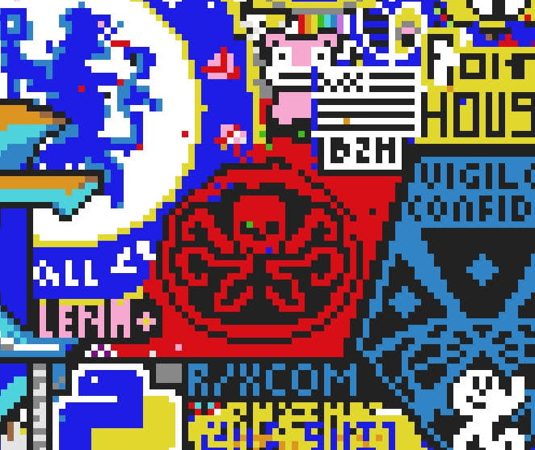
The Hydra logo is near the bottom right corner of the full image.
Other Final Products
The final image is THE product of 2017 /r/Place… but it’s not the only interesting thing that came out of it. There were articles analyzing how the web app was made, how individual groups formed, and how well the content of the final image represented a cross section of internet culture at the time. There were two other big products worth mentioning.
2017 Timelapse
This is the entire 3 day experience packed into 46 seconds. This particular video gives you a chance to see the whole picture, but then focuses in on different sections of the board to see how the individual artworks formed, evolved, and died over time.
{% include video id=“RCAsY8kjE3w” provider=“youtube” %}
2017 Better Timelapse
This is a scrollable, zoomable, scrubbable interactive timelapse of the whole 2017 r/Place. I had no idea this existed until just now. It is incredible.
Atlas
There’s even this wonderful place-atlas project that shows you just how much was packed into the original r/Place. You can get lost exploring the atlas. Only the brave amongඞus should dare enter.
Legacy
The popularity of r/Place may have caught Reddit by surprise. Every single year there were plenty of users who called for a resurgence of r/Place. People asked for it to be an annual event. People reminisced about the 3 days they spent creating together. The internet, as a whole, regarded r/Place as a triumph of culture, art, community, and engineering.
2022
Several days in advance of April Fool’s day this year, Reddit announced they were reviving r/Place. I felt nostalgia crossed with excitement. We all knew what it was like last time. We knew to be excited. What we didn’t know, though, was that this year was going to be different.
Day 1
Day 1 worked exactly like the 2017 edition of r/Place worked. The canvas was 1000x1000. There were 16 colors. I allied up with a group of folks who were making an art piece dedicated to the long awaited sequel to my favorite game of all time - Hollow Knight. A group of subscribers to the /r/HollowKnight subreddit built a new sub specifically to coordinate the placement of HK art amongඞthe chaos. The new subreddit /r/hkplace spawned a Discord server, for more tactical and immediate communication, several templates were created, shared, voted on, and ultimately implemented by us 3000+ people on the Discord chat server. At the end of Day 1 we’d successfully built a 75x78 art piece in a prominent position.
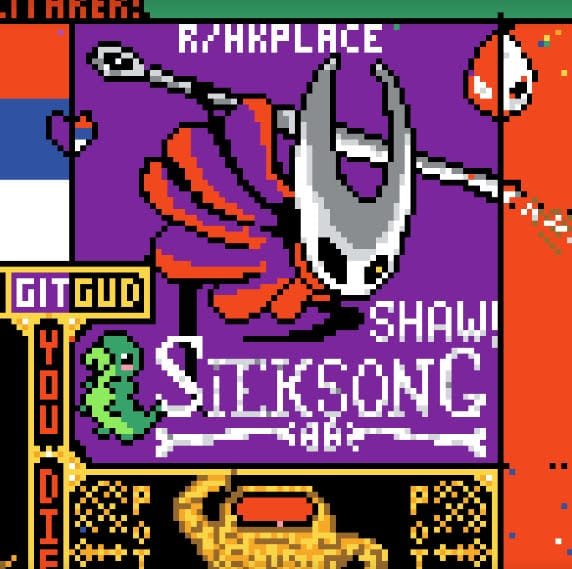
That’s “the Hornet” from Hollow Knight, who will be the main character of the long awaited sequel “Silksong”. She was built, coincidentally, right next to the logo for the game “Elden Ring” (not pictured above). The two games share a lot of common elements and an overlapping fanbase, so the communities decided to partner up to help each other out.
Day 2
Sometime shortly into Day 2, the canvas unexpectedly doubled in size to 1000x2000, and the color selection grew by 50% to 24 colors. People reformulated their plans. Groups that were already successful sometimes spawned entirely new works of art together. Groups that had previously failed tried again. We created a 2nd piece in collaboration with a dozen+ other indie game followings.
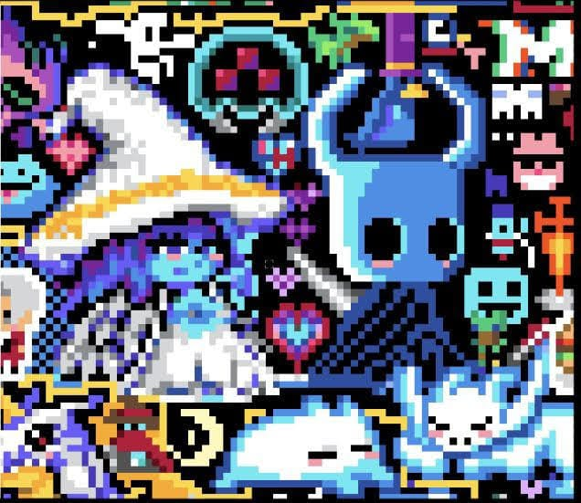
The Knight from Hollow Knight is sitting with Ranni the witch, from Elden Ring, surrounded by characters from other games.
Day 3
As most were predicting, Day 3 saw another expansion to both the canvas and color palette. When all was said and done, the canvas was 2000x2000, a full four times bigger than the original r/Place - and the color palette was twice as complex. Combining those factors the size, scope, and fidelity of 2022’s r/Place was completely unexpected.
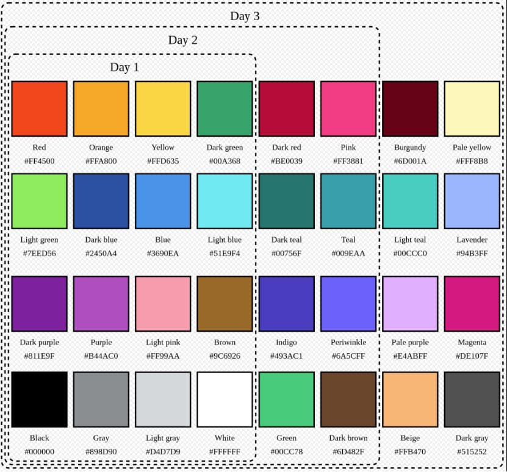
With the expanded canvas, the coordinated groups grew more and more ambitious. None moreso than the French, who claimed (and for the most part successfully defended) nearly 1/10th of the final section just by themselves.
My faction continued the collab with Elden Ring, placing yet another Hollow Knight character superimposed over a tree from the Elden Ring lore.
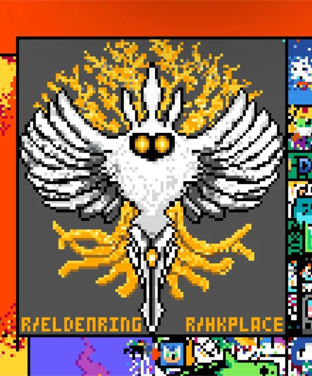
All said and done, the collaboration between r/Eldenring and /HKPlace represented 24500 pixels, aka 0.6% of the total surface area. Three thousand of us chatting, splitting into dedicated groups to serve specific roles, running democratic votes, and planning collaborations with factions representing entire countries managed to do something great, yet we represented less than 1 percent of the total space. If that’s not any indication of how big r/Place was, I don’t know what is.
The End
I was there when it all disintegrated.
The original 2017 experiment ended when the site stopped letting you place new tiles. Suddenly the way things were at that moment were the way they would be forever. Everyone spent the past 4 days assuming that’s what would happen sometime today. We jockeyed for position and held our territory, hoping it would look like what we wanted when time ran out.
But that’s not what happened. I was defending my chosen artwork when I noticed that the color palette went from 24 colors to one color: white. Reddit threw a switch and the only tiles anyone could place were white. So that’s what the people did.
Everywhere, all at once, the canvas and all the collaborations amongstඞmillions of people began disintegrating at once. All we could do was watch, or help end things faster. Once the final pixel turned white, /r/Place was over.
So this is how the Place ends. Not with a bang, but with a whiter.
The Final 2022 Image
(⬆ That’s a blank white picture, in case it wasn’t clear.)
Other Products
Interactive Timeline
Just before I posted this, Reddit publicly released everything from 2022’s r/Place - including this scrollable, zoomable version of the Canvas!
“Official” Final Image
This is the state of the canvas after the final colored tile was placed:
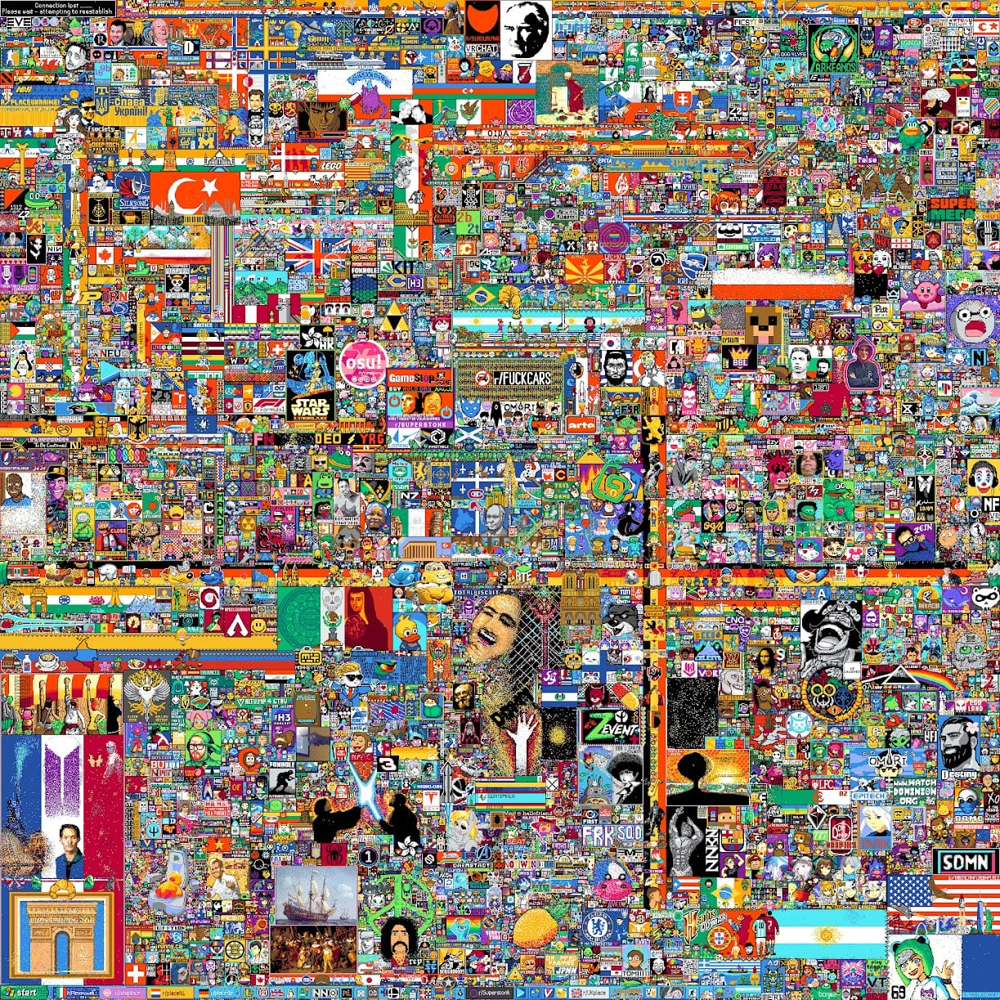
Place Atlas 2
I can’t believe this got made already. The Place Atlas 2 currently has 7000 entries pointing out things in the final image and given them some context. If you were so inclined, you could waste an entire day looking around.
Imagine if someone would do that. Can you imagine.
🙄
The Numbers
Total tiles placed: 160+ Million. Unique users who placed tiles: 10.4+ million.
Top 5: Emergences
5. Better Flags
An immediate and enduring mainstay of both 2017 and 2022 was the presence of national flags… often highly elongated flags.
In 2017 the overlapped area between the French and German flags was turned by both countries into the flag for the European Union.
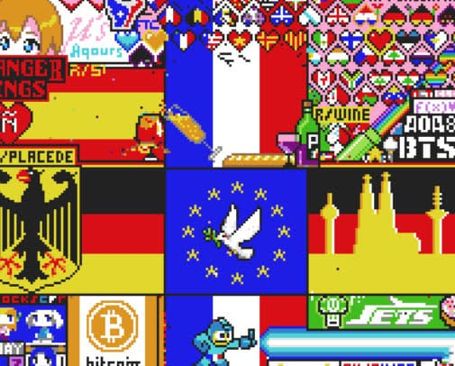
This year around, people didn’t settle for just a flag. Every nation that could hold the space turned their flag into a national work of art:
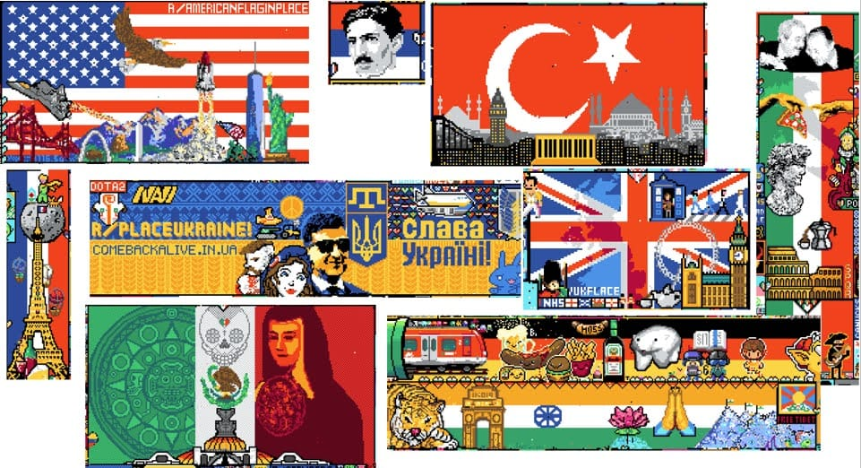
4. Alliance Hearts
Dotted all around the canvas between adjacent pieces of art you’ll find hearts that split in half . These came to mean the teams working on each art piece agreed to respect the border, or event to help each other out.
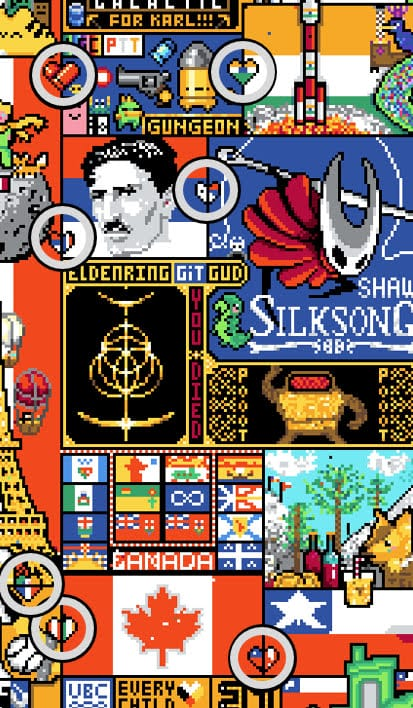
3. Memes, Video Game Characters, & Crossovers
The groups fell into four basic categories - people working in the name of a country, a video game (or video game streamer), a meme, and then everybody else. This was the pattern in 2017. It was the pattern again in 2022.
2. The Void
A so-called “cult” of 2017’s /r/Place was ‘The Void’. It popped up several times throughout the experiment, dragging down all surrounding art into a black spindly mass of horror. The Void came back time and time again around the canvas. It found an enduring home on Day 3’s expansion, until collectively, we reached out of the void.
Other similar factions included the Blue Corner, Rainbow Road, and the Green Lattice.
1. The “Amongi”ඞ
Not around in 2017, the viral social game “AmongඞUs” played the biggest role in 2022’s /r/Place. The colored AmongඞUs characters with their signature backpacks and visors started popping up all over the canvas, invading every other art piece. Estimates of a single snapshot taken near the end placed the Amongi count in the mid-2000s. In every textured surface in the art we created, there would inevitably be someone hiding these characters amongඞus.
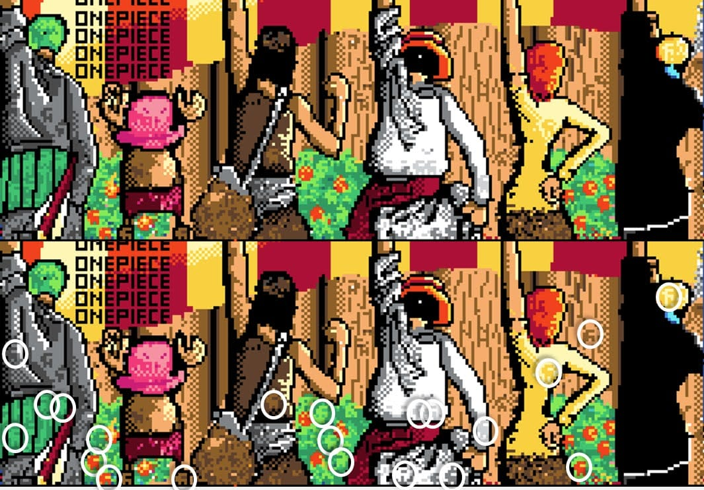
Top: original image.
Bottom: Modified by me to accentuate the fully-in-tact and well-formed crewmates hidden amongඞus. Open the ‘official’ final image above and zoom in… you’ll see them everywhere.
Quote:
Maybe the real art was the friends we made along the way. u/ggAlex